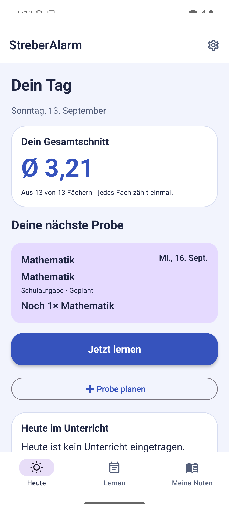
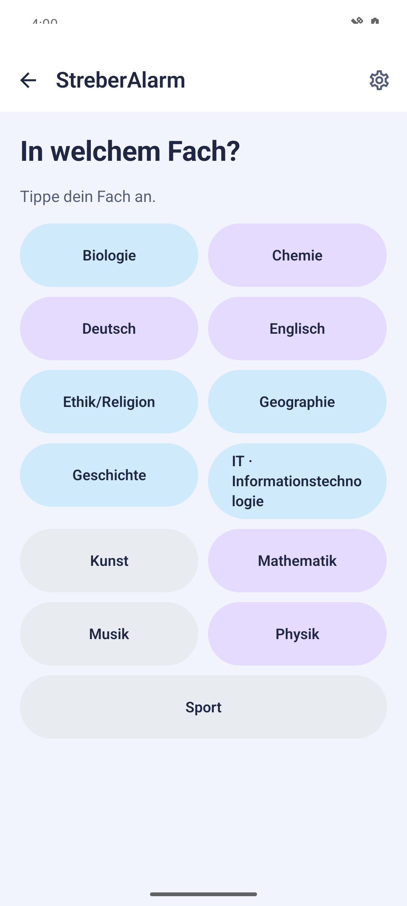
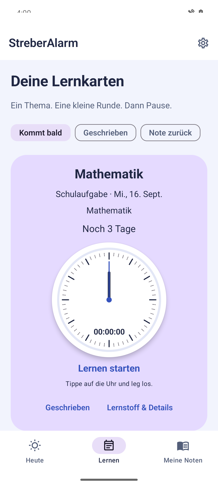
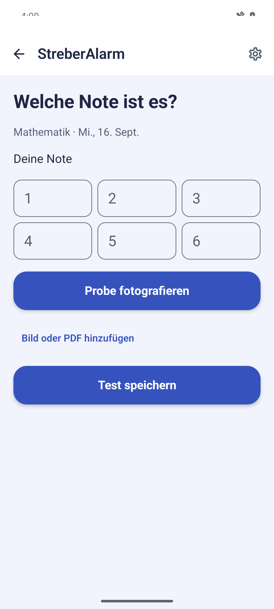
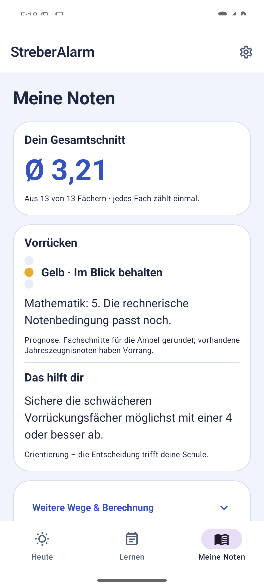
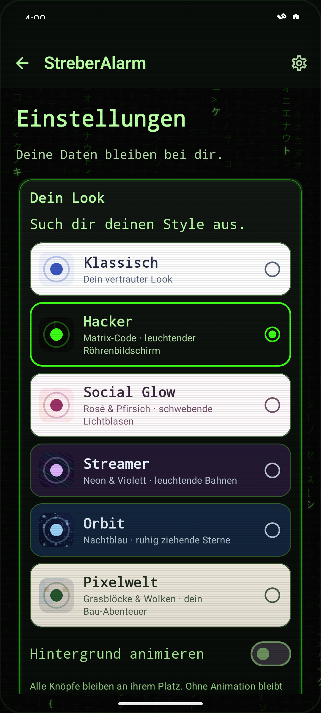
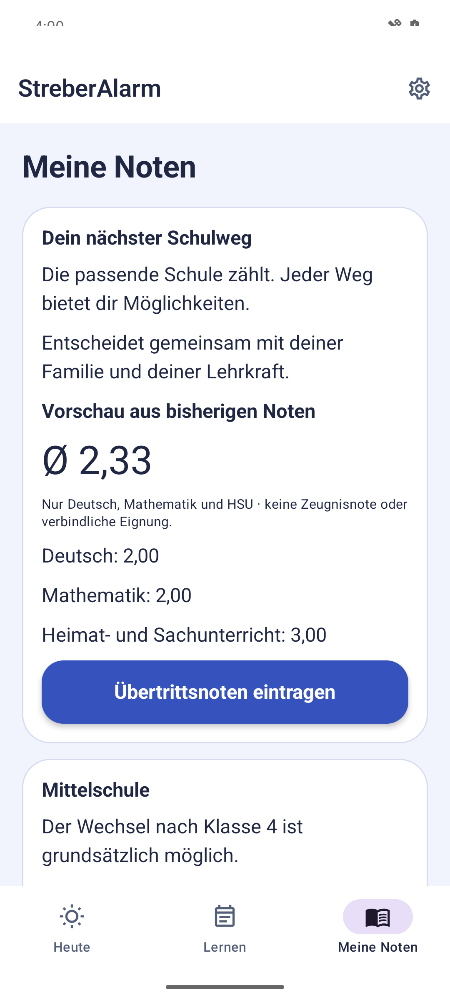

{kind=link}
{kind=link}
{kind=link}
{kind=link}
{kind=link}
{kind=link}
{kind=link}
EIN PRIVATES HOBBYPROJEKT
Für den Alltag gemacht.
StreberAlarm wird als persönliches Projekt entwickelt und nach und nach verbessert. Der Quellcode ist öffentlich einsehbar.
Den Code auf GitHub ansehen ↗ANDROID · IN ENTWICKLUNG
Deine Noten. Deine nächste Probe. Eine kleine Lernrunde.
Behalte im Blick, was du zum Bestehen brauchst.
Ein privates Hobbyprojekt. Der Quellcode ist offen.

SCHRITT FÜR SCHRITT
Sieh dir alle Kapitel an oder spring direkt zu der Funktion, die du gerade brauchst. Echte Aufnahmen, deutsche Erklärungen und Untertitel.
Das Video wird erst beim Abspielen geladen.
ENTDECKE DIE APP
Wähle ein Kapitel. Sieh den Bildschirm. Schau dir den Ablauf an.
01 / Dein Tag
StreberAlarm hilft dir, den Schulalltag im Blick zu behalten. Oben siehst du deinen bisherigen Gesamtschnitt. Darunter findest du deine nächste Probe. Tippe auf die Karte, um den Lernstoff anzusehen. Mit einem Tipp auf die große Uhr startest du eine Lernrunde. Es geht darum, gut durchzukommen. Schritt für Schritt.
Deutsch · mit Untertiteln
02 / Eine Probe planen
Eine neue Probe planst du mit wenigen Schritten. Tippe auf Probe planen, wähle das Fach und anschließend das Datum. Die Fächer stehen alphabetisch zur Auswahl. Einen eigenen Testnamen brauchst du nicht. Den Lernstoff ergänzt du direkt an der Lernkarte. So bleibt die Planung übersichtlich.
Deutsch · mit Untertiteln

03 / Lernen mit einem Klick
Unter Lernen findest du deine anstehenden Proben als Karten. Tippe auf die große Uhr, wenn du anfängst. Sie läuft, während du lernst. Ein weiterer Tipp beendet die Lernphase. Mehrere kurze Runden werden zur Probe gesammelt. Fang mit einem kleinen Thema an. Danach darf auch Pause sein.
Deutsch · mit Untertiteln

04 / Note und Arbeit festhalten
Ist die Probe geschrieben, wechselst du direkt in diesen Zustand. Sobald du deine Note kennst, wählst du Note eintragen. Hier findest du auch Probe fotografieren. Du entscheidest zwischen dem lokalen Scanner und dem Google-Scanner. Bei Google erscheint vorher ein Datenschutzhinweis. Deine Einschätzung bleibt neben der wirklichen Note erhalten.
Deutsch · mit Untertiteln

05 / Noten und Stundenplan
Meine Noten zeigt dir den bisherigen Gesamtschnitt und eine Ampel als Orientierung zum Vorrücken. Entscheidend sind die relevanten Fächer, nicht nur ein schöner Durchschnitt. Hinweise zeigen mögliche nächste Ziele. Im Stundenplan wählst du für jede Stunde ein Fach. Farben und bekannte Fachschnitte passen zur Notenübersicht. Pausen zwischen den Zeiten werden hervorgehoben.
Deutsch · mit Untertiteln

06 / Dein Look und deine Daten
In den Einstellungen suchst du deinen Look aus. Zum Beispiel Hacker mit Matrix-Code und kleinen CRT-Monitoren, Social Glow oder Pixelwelt. Die Knöpfe bleiben am selben Platz. Animationen lassen sich abschalten. Deine Schuldaten werden lokal gespeichert. Über die Datensicherung kannst du ein passwortgeschütztes Backup erstellen und später wiederherstellen.
Deutsch · mit Untertiteln

07 / Der nächste Schulweg
Für die bayerische Grundschule gibt es eine eigene Übertrittsansicht in Klasse drei und vier. Hier stehen Deutsch, Mathematik und Heimat- und Sachunterricht im Mittelpunkt. Eingetragene Einzelnoten ergeben eine Vorschau. Das offizielle Übertrittszeugnis wird getrennt erfasst. Die App erklärt die Wege zu Mittelschule, Realschule und Gymnasium. Die Entscheidung der Schule bleibt maßgeblich.
Deutsch · mit Untertiteln

EIN PRIVATES HOBBYPROJEKT
StreberAlarm wird als persönliches Projekt entwickelt und nach und nach verbessert. Der Quellcode ist öffentlich einsehbar.
Den Code auf GitHub ansehen ↗DEINE DATEN, VERSTÄNDLICH ERKLÄRT
Noten, Stundenplan und Lernzeiten bleiben auf deinem Gerät. Beim lokalen Scanner werden keine Dokumentbilder an einen Dienst übertragen. Den optionalen Google-Scanner startest du erst nach dem Datenschutzhinweis.
Datenschutzhinweise lesen ↗Entdecke die App in deinem Tempo.
Zum Tutorial ▶